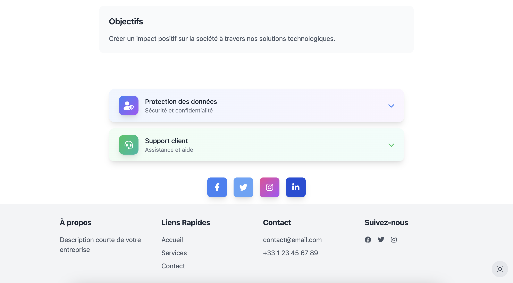
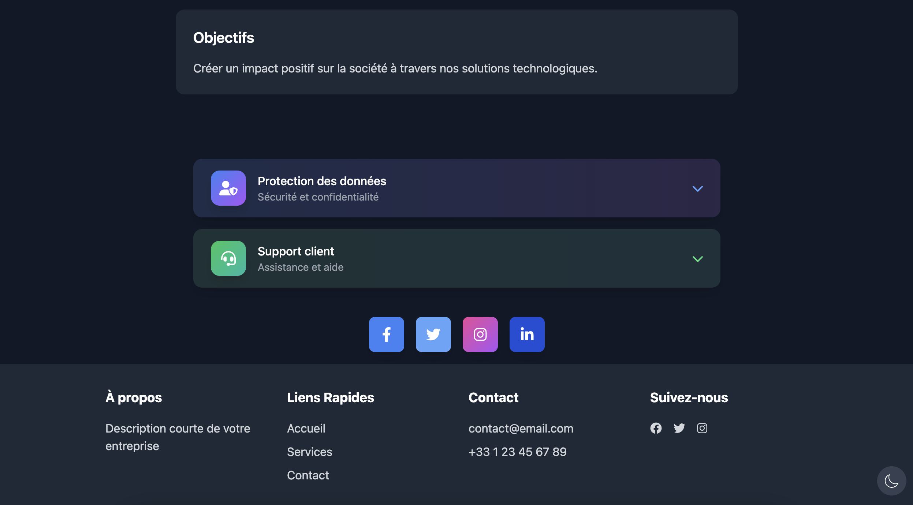

Rapide
Créez une page web complète en moins de 5 minutes
Élégant
Des designs modernes et professionnels
Optimisé
Code propre et prêt à l'emploi
Interface intuitive
Prévisualisation en temps réel
Visualisez instantanément vos modifications
Éditeur de texte
Accédez et modifiez le texte facilement
Composants flexibles
Cliquez sur les composants pour les ajouter à votre page

Une bibliothèque complète de composants
En-têtes
10 styles différents d'en-têtes pour tous vos besoins
Sections
6 sections héro et fonctionnalités préconçues
Formulaires
6 styles de formulaires pour vos interactions
FAQ
10 styles de FAQ pour répondre aux questions
Prix
13 styles de prix pour vos produits
Social
9 composants sociaux pour votre visibilité
Footer
2 styles de pieds de page élégants
Adaptatif au mode clair et sombre

Mode clair
Design épuré et professionnel

Mode sombre
Confort visuel optimal
Avantages techniques
Code optimisé
- HTML et CSS optimisés
- Classes Tailwind préconfigurées
- Compatibilité cross-browser
Thème adaptatif
- Transitions fluides
- Couleurs harmonieuses
- Styles cohérents
À noter
Webazon est un outil de design frontend. Cela signifie que :
- L'intégration backend est à votre charge
- La logique métier doit être implémentée par vos soins
- La sécurisation des données reste votre responsabilité